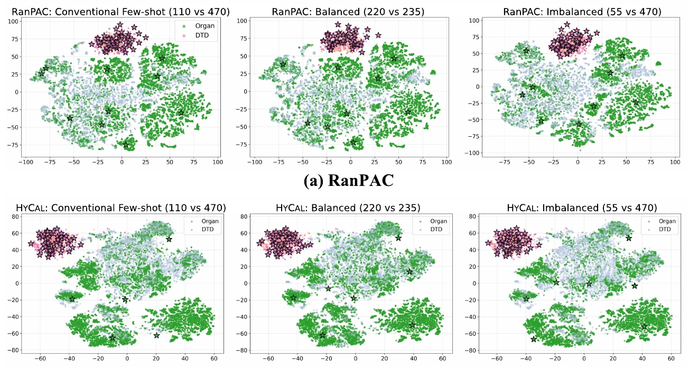
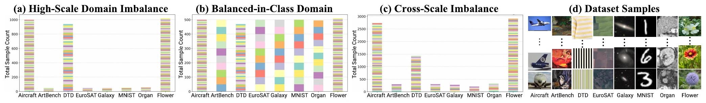
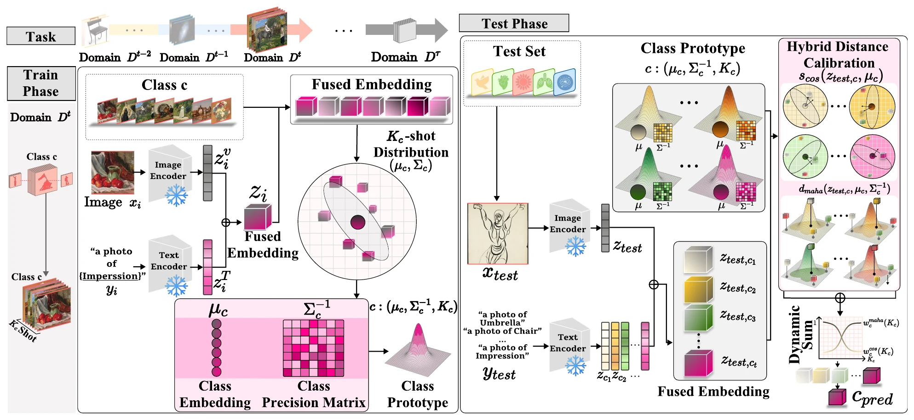
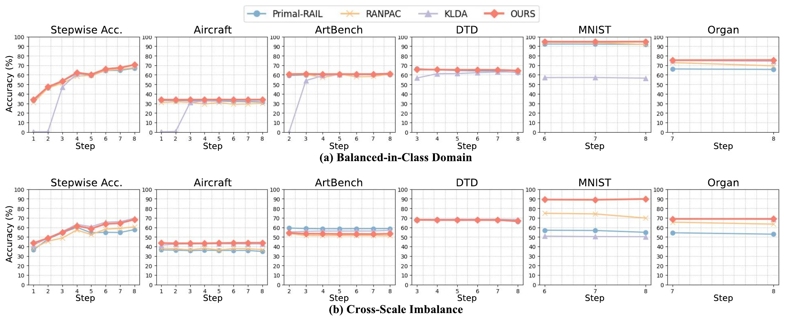

Domain Gravity
A structural bias that explains representational drift under heterogeneous domain imbalance.
TL;DR When few-shot tasks arrive from different visual disciplines with very different amounts of data, data-rich or low-entropy domains pull the shared embedding space toward themselves (Domain Gravity). HyCal counters this without any training: it scores every class with both cosine similarity and Mahalanobis distance on frozen CLIP features, and weights the two by how many shots the class has.
Pretrained Vision–Language Models (VLMs) like CLIP show promise in continual learning, but existing Few-Shot Class-Incremental Learning (FSCIL) methods assume homogeneous domains and balanced data distributions, limiting real-world applicability where data arises from heterogeneous disciplines with imbalanced sample availability and varying visual complexity. We identify Domain Gravity, a representational asymmetry where data imbalance across heterogeneous domains causes overrepresented or low-entropy domains to disproportionately influence the embedding space, leading to prototype drift and degraded performance on underrepresented or high-entropy domains. To address this, we introduce Cross-Discipline Variable Few-Shot Class-Incremental Learning (XD-VSCIL), a benchmark capturing real-world heterogeneity and imbalance where Domain Gravity naturally intensifies. We propose Hybrid Prototype Calibration (HyCal), a training-free method combining cosine similarity and Mahalanobis distance to capture complementary geometric properties—directional alignment and covariance-aware magnitude—yielding stable prototypes under imbalanced heterogeneous conditions. Operating on frozen CLIP embeddings, HyCal achieves consistent retention–adaptation improvements while maintaining efficiency. Experiments show HyCal effectively mitigates Domain Gravity and outperforms existing methods in imbalanced cross-domain incremental learning.
A structural bias that explains representational drift under heterogeneous domain imbalance.
A training-free cosine–Mahalanobis fusion method that mitigates Domain Gravity without modifying the backbone.
A cross-discipline few-shot continual learning setting reflecting severe domain heterogeneity and imbalance.
HyCal consistently improves retention–adaptation performance and remains robust even under strong Domain Gravity.
Definition 1 (Domain Gravity)Each domain induces a representational potential based on its visual coherence and data density. Overrepresented or low-entropy domains exert disproportionately strong influence in the shared embedding space.
Domain Gravity shows up in two ways. Pretrained VLMs such as CLIP inherit distributional biases from their training corpora, so visually dominant or frequent domains shape the embedding geometry and minority or high-entropy domains get weaker, less stable representations. The bias then intensifies when incremental tasks come from domains that differ in entropy, visual structure and data availability: prototypes and embeddings drift toward visually coherent or data-rich domains.
A preliminary study makes this concrete with two domains, OrganMNIST (Dmed, 11 classes) and DTD (Dtex, 47 classes). Equalizing their sample counts (220 vs 235) lifts Dmed by nearly 5%p over the usual 10-shot split (110 vs 470). At a 1:9 ratio (55 vs 470), RanPAC's Dmed accuracy collapses to 5.82%, while HyCal keeps 60.37%.

| General · 10-shot · 110 vs 470 | Balanced · 20 vs 5-shot · 220 vs 235 | Imbalanced · 5 vs 10-shot · 55 vs 470 | |||||||
|---|---|---|---|---|---|---|---|---|---|
| Method | Dmed | Dtex | Last | Dmed | Dtex | Last | Dmed | Dtex | Last |
| Zero-shot | 22.4 | 44.3 | – | 22.4 | 44.3 | – | 22.4 | 44.3 | – |
| Primal-RAIL | 54.65 | 66.37 | 60.51 | 67.69 | 61.64 | 64.67 | 56.28 | 65.31 | 60.79 |
| RanPAC | 62.54 | 64.60 | 63.57 | 66.51 | 55.02 | 60.77 | 5.82 | 62.65 | 59.23 |
| KLDA | 3.46 | 0.98 | 1.23 | 4.20 | 0.99 | 0.51 | 4.73 | 0.37 | 1.83 |
| HyCal (Ours) | 65.04 | 65.48 | 65.26 | 69.38 | 60.58 | 64.98 | 60.37 | 65.31 | 62.84 |
Dmed: OrganMNIST (11 classes), Dtex: DTD (47 classes); Last: Last accuracy over both domains. Bold: best, underline: second best among training-free methods; Primal-RAIL (trainable) in gray.
In XD-VSCIL the model learns over steps \(t = 1, \dots, \mathcal{T}\). Each step brings a new domain \(\mathcal{D}^t\) from a new academic discipline, with a class set \(\mathcal{C}^t\) disjoint from all classes seen before and only \(K_c^t\) training images per class. Data from earlier domains is not accessible. Unlike standard FSCIL, \(K_c^t\) is not fixed: both the number of classes per step and the shots per class vary, so the benchmark is imbalanced by construction.

| # | Domain | Discipline | Classes | High-Scale | Balanced-in-Class | Cross-Scale |
|---|---|---|---|---|---|---|
| 1 | Aircraft | Aeronautics | 100 | 10 · 1,000 | 5 · 500 | 5–50 · 2,733 |
| 2 | ArtBench | Art | 10 | 5 · 50 | 50 · 500 | 13–50 · 298 |
| 3 | DTD | Textures | 47 | 20 · 940 | 10 · 470 | 5–49 · 1,433 |
| 4 | EuroSAT | Remote sensing | 10 | 5 · 50 | 50 · 500 | 8–44 · 303 |
| 5 | Galaxy | Astronomy | 10 | 5 · 50 | 50 · 500 | 7–49 · 278 |
| 6 | MNIST | Fundamental visual perception | 10 | 5 · 50 | 50 · 500 | 6–38 · 208 |
| 7 | OrganMNIST | Medical imaging | 11 | 5 · 55 | 45 · 495 | 7–48 · 331 |
| 8 | OxfordFlowers | Fine-grained biology | 102 | 10 · 1,020 | 5 · 510 | 5–49 · 2,910 |
| Total | 300 | 3,215 | 3,975 | 8,494 | ||
Uniform shots within each domain, but domains differ substantially in total size (50–55 vs 940–1,020 images), producing strong domain-level skew.
A controlled baseline: every domain contributes a comparable number of images (about 500).
Each class receives 5–50 samples, so both class-wise and domain-wise sample scales vary.
Also evaluated: four random domain orders, standard FSCIL at 5/10/15/20 shots, the X-TAIL benchmark, and an OpenCLIP backbone pretrained on DataComp-1B.
Besides Average and Last accuracy, the paper proposes SCDE to evaluate zero-shot generalization, plasticity, forgetting and data efficiency together. Domains are weighted by \(w^t \propto 1/\sqrt{K^t}\), where \(K^t\) is the number of training images in \(\mathcal{D}^t\), so smaller domains count more.
HyCal (Hybrid Prototype Calibration) keeps CLIP frozen. During training it stores one prototype per class built from a few fused image–text embeddings; at inference it matches a test embedding to every prototype with two complementary measures, cosine similarity for direction and Mahalanobis distance for covariance-aware magnitude. No weights are updated and no parameters are added.

For \(X, Y \in \mathbb{R}^d\), let \(C = X^\top Y / (\lVert X \rVert \lVert Y \rVert)\) and \(M = \sqrt{(X - Y)^\top \Sigma^{-1} (X - Y)}\). If \(\Delta = X - Y \sim \mathcal{N}(0, \sigma^2 I_d)\), write \(\Delta = RU\) with magnitude \(R = \lVert \Delta \rVert\) and direction \(U\). Then \(R \perp U\), cosine depends only on \(U\) and Mahalanobis only on \(R\), so \(C \perp M\) and \(H(C, M) = H(C) + H(M)\).
For a class label \(L\), \(I(L; C, M) = I(L; C) + I(L; M \mid C) \ge \max\{I(L; C), I(L; M)\}\): the pair carries at least as much label information as either measure alone.
Isotropy is used only for analytical clarity. Real CLIP embeddings are anisotropic, and under domain shift the directional and covariance-aware cues diverge further (Supp. Secs. 7.3–7.4).
All methods use frozen CLIP ViT-B/16. HyCal is compared with the training-free FeCAM, RanPAC and KLDA and with the trainable Primal-RAIL; every number is the mean over seeds 0, 1, 42 and 1993.
| Method | Aircraft | ArtBench | DTD | EuroSAT | Galaxy | MNIST | Organ | Flower | Average | σ |
|---|---|---|---|---|---|---|---|---|---|---|
| Zero-shot | 23.91 | 50.88 | 41.90 | 37.58 | 9.80 | 44.01 | 17.97 | 67.40 | 56.41 | 18.76 |
| Primal-RAIL | 37.33±0.17 | 60.39±0.74 | 68.79±1.20 | 72.40±1.11 | 23.11±8.42 | 77.77±6.00 | 53.50±0.75 | 90.30±0.67 | 53.49±0.79 | 22.04±1.59 |
| FeCAM | 10.75±3.36 | 0.00±0.00 | 33.64±12.40 | 0.00±0.00 | 0.00±0.00 | 0.00±0.00 | 0.00±0.00 | 1.38±2.61 | 8.91±2.75 | 11.91±4.23 |
| RanPAC | 36.99±1.19 | 36.34±3.74 | 66.35±0.79 | 73.02±5.11 | 40.97±6.77 | 82.33±4.10 | 60.66±4.46 | 92.82±1.23 | 49.98±0.61 | 21.57±1.61 |
| KLDA | 29.19±0.47 | 31.66±2.65 | 68.07±1.66 | 75.21±4.56 | 36.85±3.87 | 79.95±3.97 | 59.52±3.92 | 95.19±1.46 | 41.06±0.80 | 24.61±0.91 |
| HyCal (Ours) | 40.97±0.69 | 49.99±2.27 | 69.84±1.07 | 74.70±1.71 | 39.65±2.62 | 77.56±6.05 | 60.47±4.63 | 95.34±0.78 | 54.48±0.78 | 19.50±0.76 |
| Method | Aircraft | ArtBench | DTD | EuroSAT | Galaxy | MNIST | Organ | Flower | Average | σ |
|---|---|---|---|---|---|---|---|---|---|---|
| Zero-shot | 23.91 | 50.88 | 41.90 | 37.58 | 9.80 | 44.01 | 17.97 | 67.40 | 56.41 | 18.76 |
| Primal-RAIL | 36.91±0.61 | 60.44±0.90 | 67.75±0.68 | 71.66±1.11 | 20.90±7.20 | 77.73±6.05 | 53.23±0.61 | 90.30±0.67 | 59.86±1.51 | 22.53±1.36 |
| FeCAM | 10.56±3.43 | 0.00±0.00 | 33.64±12.40 | 0.00±0.00 | 0.00±0.00 | 0.00±0.00 | 0.00±0.00 | 1.38±2.61 | 5.69±1.90 | 11.90±4.24 |
| RanPAC | 37.20±1.33 | 36.86±2.51 | 66.71±0.65 | 72.89±4.74 | 41.04±6.97 | 81.25±4.61 | 60.25±4.51 | 92.82±1.23 | 61.13±1.29 | 21.29±1.67 |
| KLDA | 39.38±0.57 | 37.67±2.96 | 68.99±1.64 | 75.18±4.39 | 37.11±3.07 | 78.77±4.20 | 59.17±4.10 | 95.19±1.46 | 61.43±0.94 | 21.89±0.78 |
| HyCal (Ours) | 40.98±0.61 | 49.68±2.23 | 69.59±0.93 | 74.63±1.78 | 39.54±2.62 | 77.71±5.24 | 60.51±4.73 | 95.34±0.78 | 63.50±0.73 | 19.55±0.80 |
Mean over 4 seeds with 95% confidence intervals. Bold: best, underline: second best among training-free methods. Primal-RAIL is trainable and shown in gray for reference. σ is the spread across domains.
HyCal achieves the highest SCDE in most XD-VSCIL settings, including High-Scale Domain Imbalance (53.70) and Balanced-in-Class Domain (60.92).
| Method | Sadapt | Slast | SCDE |
|---|---|---|---|
| Primal-RAIL | 49.41±10.41 | 57.86±2.22 | 53.18±6.51 |
| FeCAM | 5.15±13.52 | 1.85±0.62 | 1.84±2.08 |
| RanPAC | 50.07±8.59 | 56.44±10.35 | 52.57±1.16 |
| KLDA | 42.39±0.64 | 58.79±1.47 | 49.26±0.95 |
| HyCal (Ours) | 47.71±0.53 | 61.39±1.05 | 53.70±0.74 |
| Method | Sadapt | Slast | SCDE |
|---|---|---|---|
| Primal-RAIL | 52.77±0.34 | 67.39±0.68 | 59.19±0.47 |
| FeCAM | 10.80±14.71 | 11.55±1.95 | 10.06±6.65 |
| RanPAC | 56.42±11.30 | 63.97±12.04 | 59.29±0.36 |
| KLDA | 47.47±0.25 | 70.61±0.90 | 56.77±0.47 |
| HyCal (Ours) | 53.63±0.14 | 70.49±0.23 | 60.92±0.17 |
| Method | Sadapt | Slast | SCDE |
|---|---|---|---|
| Primal-RAIL | 46.95±0.83 | 57.27±1.67 | 51.60±1.18 |
| FeCAM | 10.67±3.58 | 20.05±7.06 | 13.91±4.68 |
| RanPAC | 49.32±2.56 | 62.08±5.98 | 54.96±3.92 |
| KLDA | 52.25±0.48 | 69.39±1.15 | 59.61±0.72 |
| HyCal (Ours) | 51.99±0.35 | 68.83±0.57 | 59.24±0.41 |
Mean over 4 seeds with 95% confidence intervals. Bold/underline as in Table 2.

With a fixed number of shots per class, HyCal is the best training-free method on every metric from 5 to 20 shots, including the 5-shot regime where KLDA's Average accuracy drops to 7.46%.
| Method | Last Acc. | Avg Acc. | SCDE |
|---|---|---|---|
| Primal-RAIL | 59.40±1.88 | 51.61±1.10 | 52.58±1.73 |
| FeCAM | 8.90±1.12 | 8.48±0.28 | 4.27±6.13 |
| RanPAC | 58.04±1.53 | 45.48±2.89 | 51.94±1.10 |
| KLDA | 56.54±0.61 | 7.46±0.08 | 29.13±0.06 |
| HyCal (Ours) | 60.82±0.97 | 50.58±0.74 | 60.36±1.35 |
| Method | Last Acc. | Avg Acc. | SCDE |
|---|---|---|---|
| Primal-RAIL | 59.40±1.88 | 51.61±1.10 | 52.58±1.73 |
| FeCAM | 11.16±3.26 | 14.62±4.23 | 7.22±1.76 |
| RanPAC | 64.34±0.26 | 53.13±0.78 | 56.19±0.11 |
| KLDA | 66.01±0.46 | 43.62±0.44 | 53.34±0.34 |
| HyCal (Ours) | 66.52±0.28 | 56.69±0.47 | 57.27±0.21 |
| Method | Last Acc. | Avg Acc. | SCDE |
|---|---|---|---|
| Primal-RAIL | 59.40±1.88 | 51.61±1.10 | 52.58±1.73 |
| FeCAM | 22.48±6.51 | 25.29±2.84 | 21.57±8.40 |
| RanPAC | 66.52±0.41 | 56.62±0.40 | 57.86±0.30 |
| KLDA | 68.55±0.51 | 57.19±0.63 | 58.78±0.39 |
| HyCal (Ours) | 69.02±0.37 | 59.27±0.62 | 59.06±0.22 |
| Method | Last Acc. | Avg Acc. | SCDE |
|---|---|---|---|
| Primal-RAIL | 59.40±1.88 | 51.61±1.10 | 52.58±1.73 |
| FeCAM | 21.37±3.18 | 25.06±2.13 | 18.31±10.96 |
| RanPAC | 67.85±0.24 | 58.29±0.40 | 58.70±0.17 |
| KLDA | 69.73±0.88 | 59.65±0.61 | 52.13±0.68 |
| HyCal (Ours) | 70.67±0.21 | 60.90±0.56 | 60.21±0.06 |
Mean over 4 seeds with 95% confidence intervals. Bold/underline as in Table 2.
Under balanced data the Mahalanobis distance alone beats cosine similarity; as imbalance grows the gap narrows, and the shot-dependent combination beats either measure and a fixed 50/50 average in every setting. Across four random domain orders, HyCal is the strongest or near-strongest method (Supp. Sec. 8.1).
| Method | Last Acc. | Avg Acc. | SCDE |
|---|---|---|---|
| Cosine similarity | 60.09±1.65 | 51.46±1.44 | 51.29±1.50 |
| Mahalanobis distance | 63.10±0.85 | 53.68±0.71 | 53.50±0.87 |
| Average | 63.33±0.81 | 54.35±0.95 | 53.68±0.76 |
| Dynamic (Ours) | 63.50±0.73 | 54.48±0.78 | 53.70±0.74 |
| Method | Last Acc. | Avg Acc. | SCDE |
|---|---|---|---|
| Cosine similarity | 64.67±0.82 | 54.00±0.82 | 56.82±0.55 |
| Mahalanobis distance | 70.34±0.28 | 57.42±0.27 | 60.78±0.19 |
| Average | 69.80±0.41 | 57.48±0.64 | 60.32±0.17 |
| Dynamic (Ours) | 70.54±0.23 | 57.75±0.45 | 60.92±0.17 |
| Method | Last Acc. | Avg Acc. | SCDE |
|---|---|---|---|
| Cosine similarity | 65.09±0.64 | 55.85±0.62 | 56.44±0.59 |
| Mahalanobis distance | 65.85±1.47 | 55.68±1.46 | 56.99±1.41 |
| Average | 67.63±1.39 | 57.97±1.36 | 58.24±1.16 |
| Dynamic (Ours) | 68.69±0.44 | 58.43±0.51 | 59.24±0.41 |
Average: fixed 50/50 sum of the two scores. Dynamic: the shot-dependent weight wc of Eq. (13). Bold: best, underline: second best.
With an OpenCLIP ViT-B/16 backbone pretrained on DataComp-1B, HyCal leads on all three metrics. On X-TAIL it has the best Last accuracy (77.44%), while KLDA leads Average accuracy and SCDE.
| Method | Last Acc. | Avg Acc. | SCDE |
|---|---|---|---|
| Primal-RAIL | 65.89 | 58.10 | 56.40 |
| RanPAC | 66.20 | 55.78 | 55.64 |
| KLDA | 63.95 | 41.24 | 51.50 |
| HyCal (Ours) | 68.88 | 59.89 | 57.94 |
| Method | Last Acc. | Avg Acc. | SCDE |
|---|---|---|---|
| Primal-RAIL | 73.82 | 66.79 | 69.48 |
| RanPAC | 69.74 | 67.60 | 68.20 |
| KLDA | 76.71 | 71.38 | 72.42 |
| HyCal (Ours) | 77.44 | 64.41 | 70.66 |
Left tab: High-Scale Domain Imbalance with an OpenCLIP ViT-B/16 backbone pretrained on DataComp-1B. Right tab: the X-TAIL cross-domain benchmark. Bold/underline as in Table 2.
The official implementation is at EJLEE5826/HyCal-CIL (MIT license), with configs and scripts for every setting above. Dataset preparation is described in the repository README.
git clone https://github.com/EJLEE5826/HyCal-CIL.git HyCal-CIL
cd HyCal-CIL
conda create -n hycal python=3.9 -y
conda activate hycal
pip install -r requirements.txt
# High-Scale Domain Imbalance, seeds 0 / 1 / 42 / 1993 on GPU 0
DATA_ROOT=/path/to/datasets bash scripts/run_high_scale.sh 0@InProceedings{Lee_2026_CVPR,
author = {Lee, Eunju and Kim, MiHyeon and Kwon, JuneHyoung and Lee, Yoonji and Kim, JiHyun and Jang, Soojin and Kim, YoungBin},
title = {HyCal: A Training-Free Prototype Calibration Method for Cross-Discipline Few-Shot Class-Incremental Learning},
booktitle = {Proceedings of the IEEE/CVF Conference on Computer Vision and Pattern Recognition (CVPR)},
month = {June},
year = {2026},
pages = {29462-29471}
}